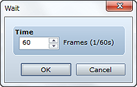

Temporarily halts event processing. The player will not be able to perform any operations while processing is halted (parallel processing excluded).
Specify the length of time to halt processing in frames (1 to 999). One frame is equivalent to 1/60 of a second.